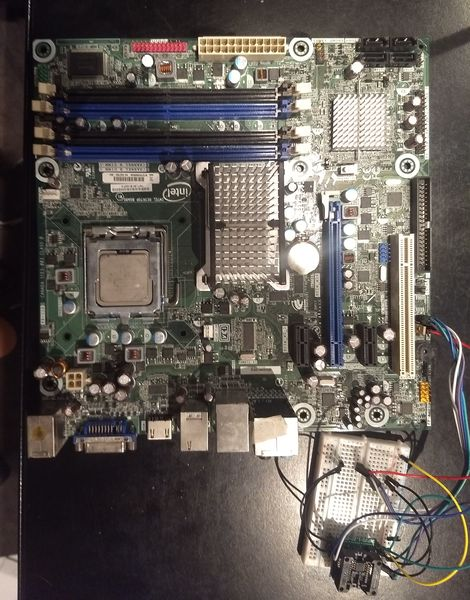
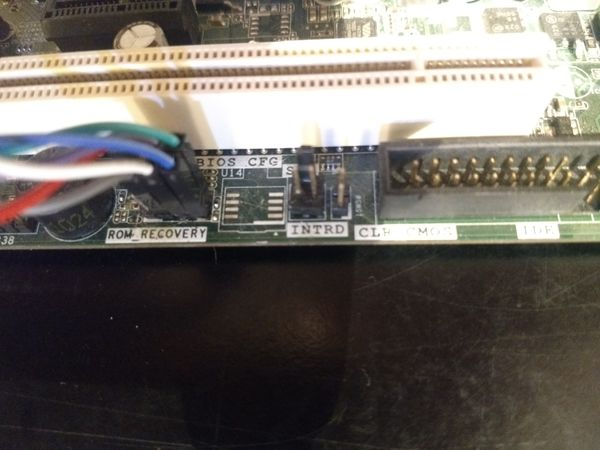

Intel DG43GT
This page describes how to run coreboot on the Intel DG43GT desktop.
Flashing coreboot
Type |
Value |
|---|---|
Socketed flash |
no |
Model |
W25X32 |
Size |
4 MiB |
In circuit flashing |
NO! |
Package |
SOIC-8 |
Write protection |
No |
Dual BIOS feature |
No |
Internal flashing |
yes |
Internal programming
The SPI flash can be accessed internally using flashrom. Only the BIOS region can and needs to be written to.
$ flashrom -p internal --ifd -i bios -w coreboot.rom --noverify-all
External programming
ISP (in circuit programming) seems to be impossible on this board, which is a property it shares with many boards featuring the ICH10 southbridge. Recovering from a bad flash will require desoldering the flash! Desoldering the SPI flash can easily be done with a hot air station. Apply some flux around the SPI flash, set the hot air station to 350-400°C and after heating the chip up for a minute it should be possible to remove it.
Having removed the flash chip, you can reprogram it externally then resolder it using a soldering iron. Another option would be to hook up a SPI flash (socket) to the SPI header, for easier flash removing in the future (if you expect to be hacking on this board). To do this you first need to solder the SPI header to the board.
NOTE: This header cannot be used for ISP either.
NOTE2: Don’t forget to connect the WP# and HOLD# pin on the SPI flash to 3.3V.
The layout of the header is:
+---+---+
GND <- | x | x | -> SPI_CLK
+---+---+
3VSB <- | x | x | -> SPI_MISO
+---+---+
| | x | -> SPI_MOSI
+---+---+
SPI_CS# <-| x | x | -> SPI_CS# (again)
+---+---+
Picture of the board with the flash hooked on externally

Close up picture of the SPI flash pads and recovery header

Technology
Northbridge |
Intel G43 (called x4x in coreboot code) |
Southbridge |
Intel ICH10 (called i82801jx in coreboot code) |
CPU (LGA775) |
model f4x, f6x, 6fx, 1067x (pentium 4, d, core 2) |
SuperIO |
Winbond W83627DHG |
Coprocessor |
Intel ME (optionally enabled) |
Clockgen (CK505) |
SLG8XP549T |